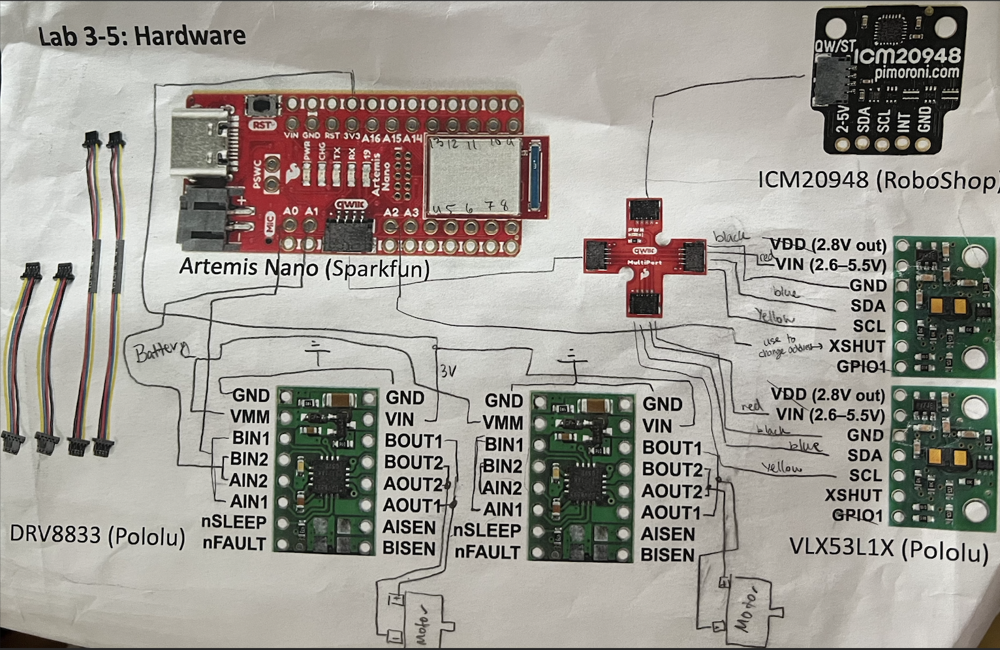
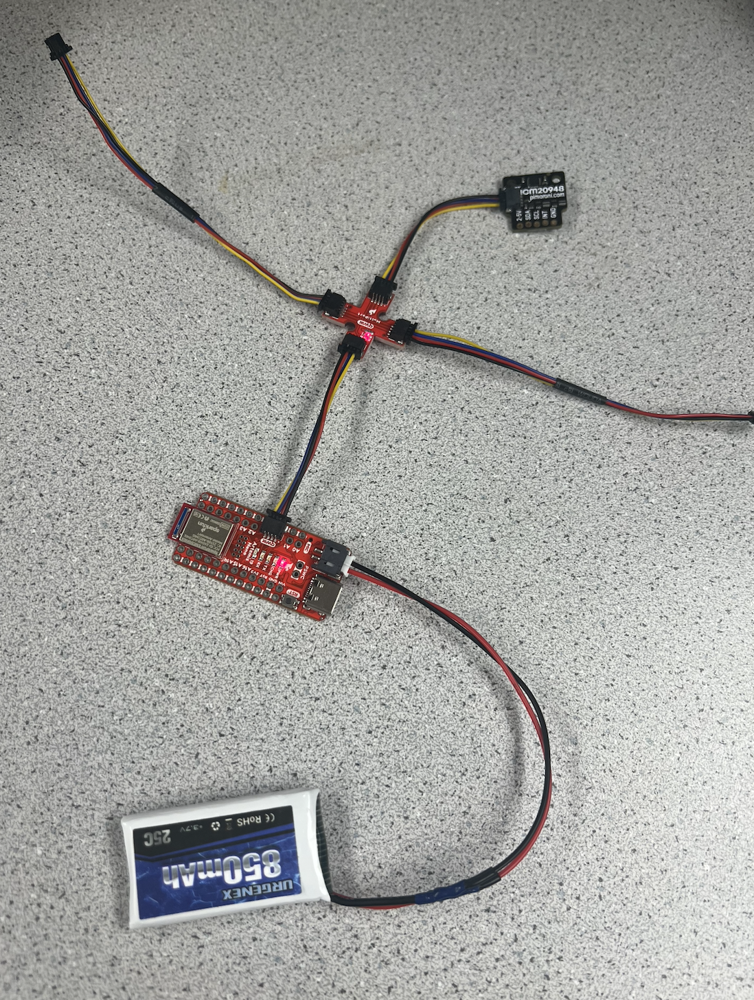

The focus of lab 3 was to use two time of flight sensor to make distance measurements. The lab consists of wiring the ToF sensors with an I2C connection, soldering the wires, and recalibrating the sensors. By connecting the two ToF sensors to the RC car, it is possible to run state estimation and perform stunts. The sensors will likely be connected to the front and side of the car, providing information relevant to forward motion and turning. However, this setup only allows one side to be monitored and cannot detect any object behind the car in case of backward motion.
The VL53L1X Sensor is a time of flight sensor that uses the phase change of reflected light to calculate the distance to objects. The sensor is connected via a I2C connector. The connector has 4 wires: power, ground, clock, and data. Connecting these to the ToF sensor allows for data communication. I2C communication can also have many sensors connected on one channel, saving wiring and pin space. However, the microcontroller must know the address of each sensor. Since both ToF sensors have the same 0x29 address, the shutdown pin must be used on one of the sensors to change the address of the other sensor. This will allow for both sensors to communicate with the Artemis. Of note, the bootup sequence for the Artemis must first check the current addresses of all the sensors and then change them to avoid misidentification of sensors.
To connect the ToF sensors, QWIIC multiport was used, allowing for multiple connection to one line. This also allowed the IMU from the previous lab to remain connected. Both ToF sensors were soldered to the 12C connectors, and the XShut pin on one of the sensors was soldered to the A2 pin on the Artemis. Then, using the example code for the ToF sensor, the address for one of the ToF sensors was identified and a connection was established.
Following the example code, the distance was measured with the ToF. Using a ruler to roughly estimate how accurate the sensor is, it was determined that the sensor overestimated the distance by a few millimeteres with .distanceModeShort() and was even more innacurate with .distanceModeLong(). These two settings are important to understand depending on the requirements of the car. Short distance sensing tends to be more accurate, but cannot handle thigns to far away. If the RC car is moving fast and quickly traverses the 1.3m that the short distance setting can detect, it may make more sense to go with the long distance setting that can detect up to 4m away.
In the previous section, only one sensor was connected. However, the RC car will have two sensors working in parallel. In this section, two sensors are added to the I2C channel and both measure distance at the same time.

During this lab, the RC cars were fully charged and became operational. Upon testing, the cars showed relatively easy maneuverability, and very fast acceleration. The acceleration easily allowed the car to do flips. This video is my first attempt at a trick, and all future videos will build on this start.